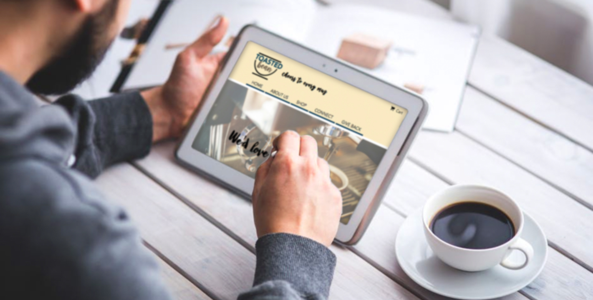
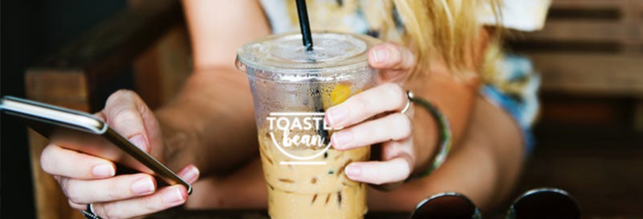
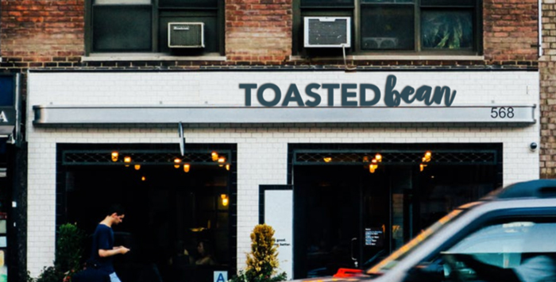
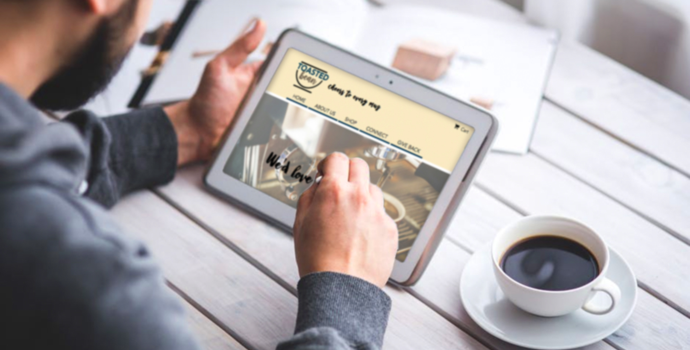
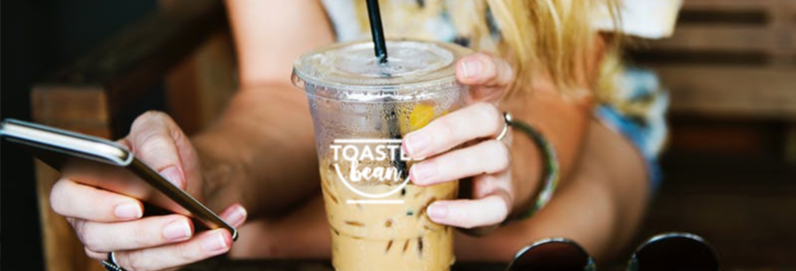
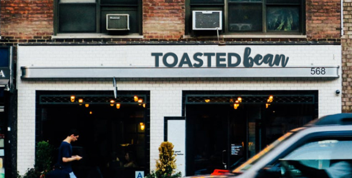

Our Story
After living in New York City for more than a decade, two brothers, AJ and Nikko, decided to leave the “city that never sleeps” for the City of Brotherly Love. In 2003, they left Wall Street to start a small coffee shop. They figured it would be a great place to serve amazingly-cool coffee.
Toasted Bean focuses on Brotherly Love by sharing the importance of coffee, how it brings us closer to one another, and by giving back to the community. We aspire to make and roast coffee in it's simplest form. No fancy cross-mixtures, just traditional light and dark roast coffee with the occasional tea or two. Their inspiration came from their mother who is a down-to-earth coffee fanatic. She appreciates coffee and all it has to offer.
What We Serve
Our menu options interchange daily. We love experimenting with different foods and pastries. One thing that stays consistent is our love for coffee and the roasts we have to offer. We specialize in light and dark roasts. Come visit our shop to see what we have on the menu this week.


 




